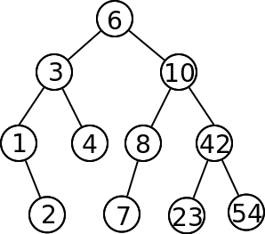

Use como base as classes BSTree<T> e BSTNode<T>.
Acrescente à classe dada um método public int countBetween(T a, T b) que devolve a quantidade de elementos que são ≥a e ≤b, ou seja, que estão no intervalo [a,b].
É garantido que a árvore binária é de pesquisa e que não é vazia (tem pelo menos um valor armazenado. É também garantido que a≤b
A figura seguinte ilustra uma árvore binária de pesquisa.

Se a árvore for chamada de t, então alguns exemplos de chamadas seriam:
Deverá submeter apenas a classe BSTree<T>, acrescentando o método countBetween como pedido (e sem apagar ou modificar nenhum dos outros métodos dados como base). Pode assumir que terá acesso no Mooshak à classe BSTNode<T> (não a pode mudar) e se precisar pode criar outros métodos auxiliares. O Mooshak irá criar várias instâncias da sua classe e irá fazer uma série de testes ao método por si implementado.
Os exemplos correspondem à árvore da figura do enunciado.
| Chamada | Valor de retorno |
|---|---|
| t.countBetween(5,44) | 6 |
| t.countBetween(7,10) | 3 |
| t.countBetween(0,90) | 11 |
| t.countBetween(60,80) | 0 |
| t.countBetween(8,54) | 5 |
| t.countBetween(2,22) | 7 |
| t.countBetween(2,2) | 1 |
Conteúdo de Fernando Silva (DCC/FCUP), migrado de dcc.fc.up.pt/~fds/aulas/EDados/2526/praticas/problems/prob209.html.